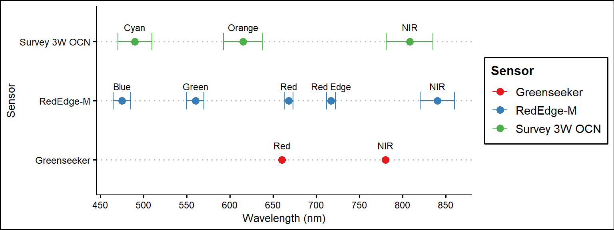
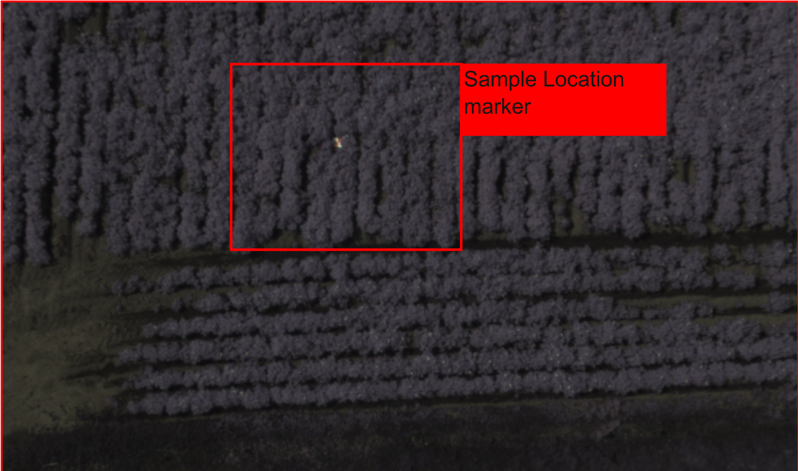
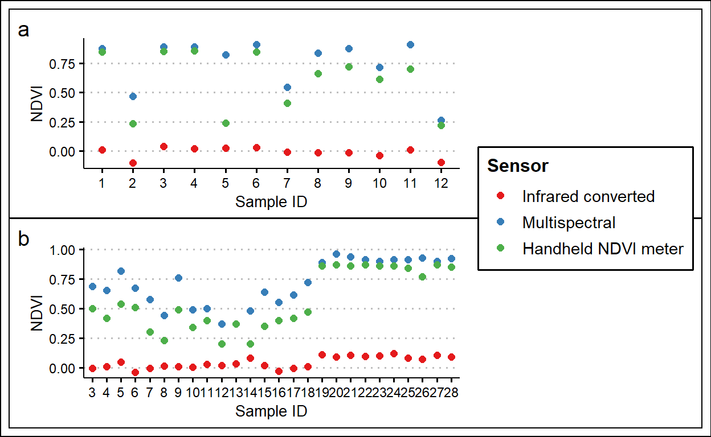
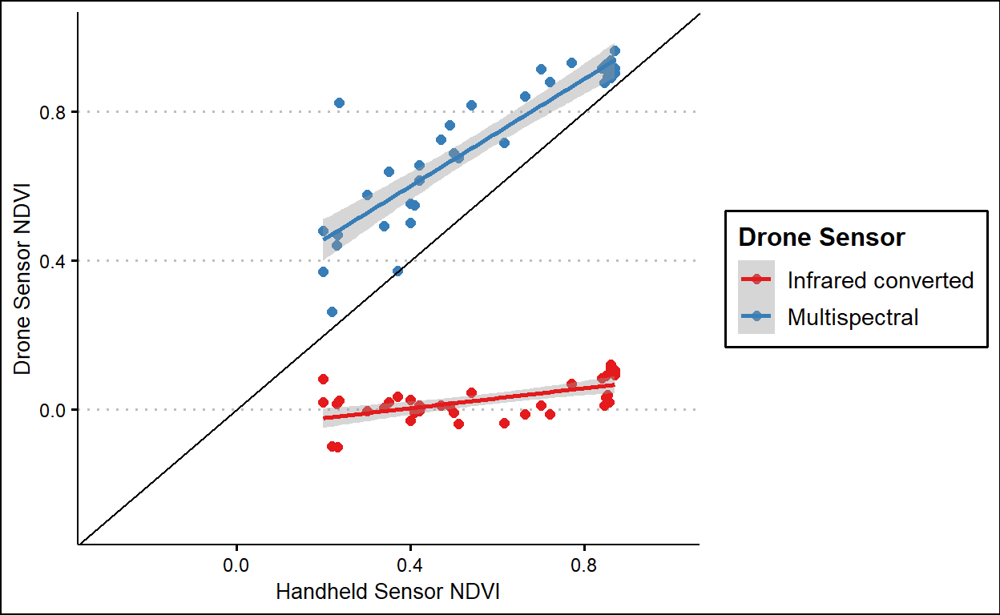
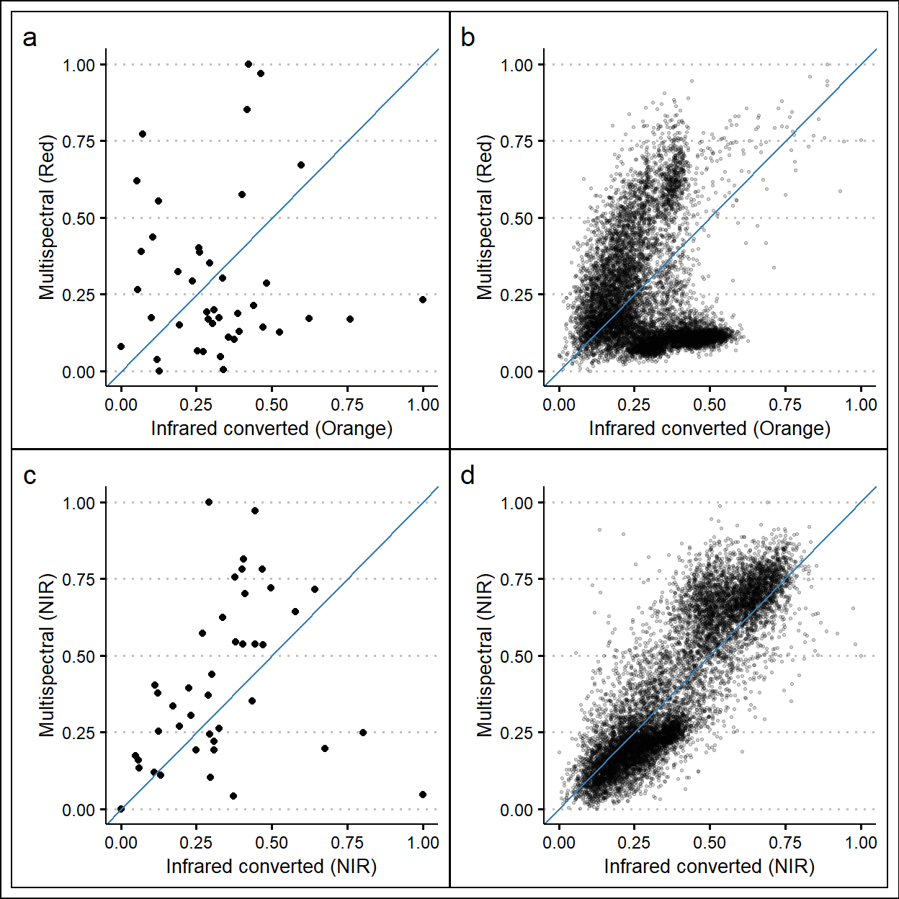
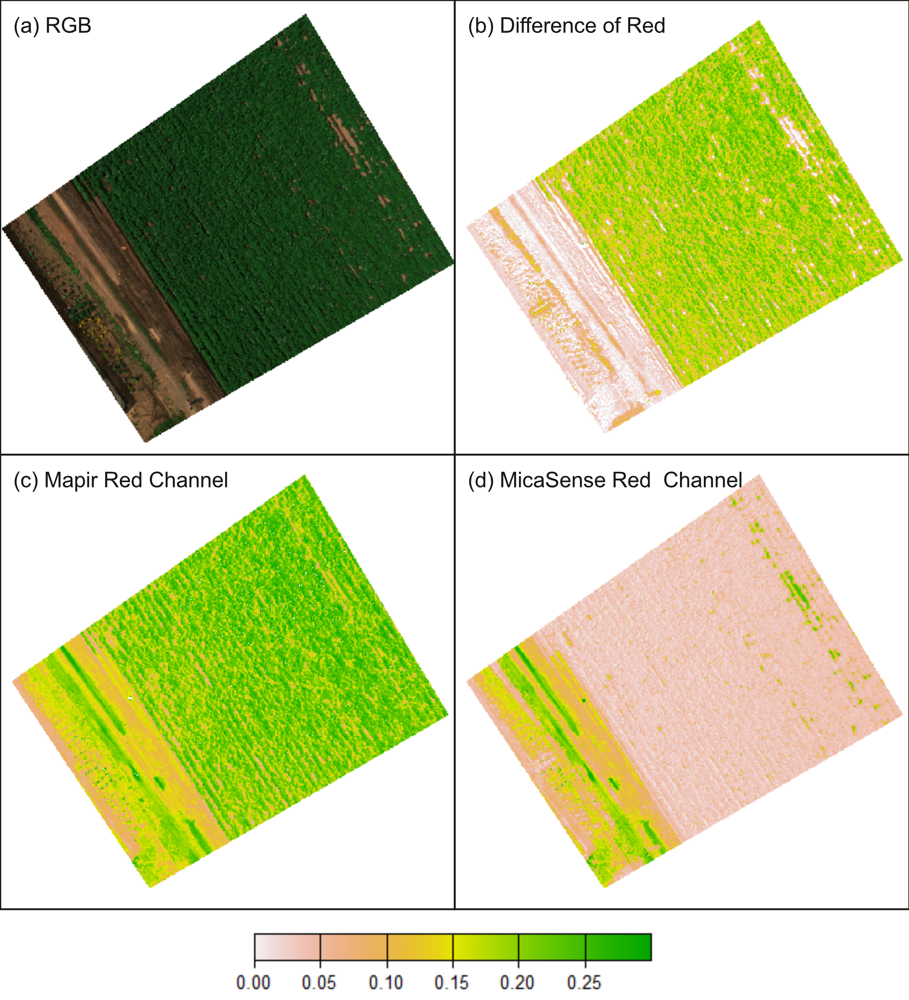

On the accuracy of an infrared-converted drone camera with Orange-Cyan-NIR filter for use in vegetation and environmental monitoring
Abstract
Drones equipped with cameras sensitive to near-infrared wavelengths are increasingly being used in environmental assessment studies and in agriculture. These cameras are sensitive to vegetation cover, extent of eutrophication in water bodies, and aspects of crops such as growth vigour, biomass and potential yield. Single-sensor (‘RGB’) cameras with modified spectral filters that allow for capturing near-infrared wavelengths offer a low-cost alternative to multi-sensor multispectral cameras or spectrometers. However, some studies point to lower measurement accuracies by such infrared converted sensors. So, to what extent can infrared converted cameras be used to quantify vegetation condition? This case study compared Normalized Difference Vegetation Index (NDVI) measurements from an infrared converted camera to those measured by a drone-borne multispectral camera and a handheld NDVI meter, as captured over soybean and potato fields. It was observed that the infrared converted camera derived NDVI was consistently lower over vegetation than NDVI measured from the multispectral and handheld sensors. The study builds on previous case studies with similar results by further evaluating the reflectance patterns of the individual image bands to find possible reasons for the discrepancy in vegetation index measurements. There is good agreement between the near-infrared bands of the respective sensors (\(r = 0.87\)), but the respective red bands have weak correlation (\(r = -0.03\)). We discuss possible reasons for the lower vegetation index measurements observed by the infrared converted camera, noting broad band sensitivities and differing central wavelengths, which may have caused overestimated reflectance in the red band. All processing and analysis were executed with open-source software, and source code is made available to support reproducible research.
keywords: modified RGB camera, drone remote sensing, sensor comparison, UAV environmental monitoring, Mapir Survey 3W, MicaSense RedEdge-M.
Introduction
Drones equipped with cameras are increasingly being used in environmental assessment studies and agriculture. For example, such drone-camera systems have recently been used to monitor ocean algal blooms (Fernandez-Figueroa, Wilson, and Rogers 2022) and other studies of water eutrophication (Barajas et al. 2021; Sheng, Azhari, and Ibrahim 2021). Drone cameras are also used to measure different aspects of crops, such as growth vigor, biomass and water-stress (Hafeez et al. 2022). Specialized cameras for vegetation monitoring often have a sensor sensitive to wavelengths in the near-infrared part of the EM-spectrum. Healthy photosynthesizing vegetation shows high reflectance in near-infrared wavelengths, but comparatively low reflectance in the red part of the spectrum (Myneni et al. 1995). So, if red and near-infrared wavelengths are recorder by a drone sensor, the condition or growth vigour of vegetation can be estimated with vegetation indices such as the Normalised Difference Vegetation Index, or NDVI (Huang et al. 2021). This index ranges from -1 to 1, with higher values interpreted as vegetation with higher growth vigour. Such drone-camera systems offer a comparatively low-cost method to capture image data for wide areas, and allows data to be spatially referenced so that it can be overlaid with other sources of spatially explicit data. Different drone camera sensors however have different price-points and characteristics that may influence the quality of measurements (Nijland et al. 2014). Thus, as the use of these technologies scale in agriculture and environmental studies, it is all the more necessary to evaluate the measurement bias or limitations of different drone sensor types.
There are different ways in which cameras are designed to capture near-infrared wavelengths (Maes and Steppe 2019). One approach is that the camera has an independent imaging sensor and lens for each band. An alternative approach is where a single sensor camera that uses a Bayer Color filter array to capture 3 color bands – often referred to as red-green-blue (RGB) cameras – is modified to become sensitive to light in the near-infrared spectrum (Lebourgeois et al. 2008). In this article these are referred to as infrared converted cameras (Nijland et al. 2014), although they are also referred to as modified RGB (Lebourgeois et al. 2008; Wang and Brinker 2020) or modified multispectral cameras (Fernandez-Figueroa, Wilson, and Rogers 2022). Infrared converted cameras work by removing the filter which blocks NIR light from entering the sensor, and then substituting one of the RGB camera’s bands for the NIR band. For example, instead of Red-Green-Blue, the camera becomes sensitive to Red-Green-NIR. The single sensor infrared converted cameras are cheaper (by order of magnitude) than multispectral cameras with multiple sensors. They thus pose an attractive alternative, especially in cases where ‘proper’ multispectral cameras are considered prohibitively expensive. Several studies highlight the value of lowering the cost of technologies that can support environmental monitoring (Fernandez-Figueroa, Wilson, and Rogers 2022) and agriculture (Fernandez-Gallego et al. 2019; Cucho-Padin et al. 2020; Corti et al. 2019).
Infrared converted cameras are an appealing option for drone agriculture remote sensing because of their comparative low-cost and ability to capture near-infrared wavelengths. However, it is necessary to verify the accuracy of spectral measurements made by these sensors. Despite being used in studies (Lebourgeois et al. 2008; Argolo dos Santos et al. 2020), some authors reported lower measurement accuracy for infrared converted cameras, if compared to other multispectral cameras or spectroscopes (Bueren et al. 2015; Gomes et al. 2021; Nijland et al. 2014). This may partially be because the bands captured by single-sensor RGB camera is usually sensitive to light outside of the target wavelengths, and so measurements in specific band may be polluted by light in other parts of the spectrum (Burggraaff et al. 2019; Berra et al. 2015). This means for example that a modified RGB camera may report incorrect values for a specific band, because the sensor is also capturing light from the neighboring bands.
Before such infrared converted cameras can be recommended for quantitative environmental monitoring studies, or operational use on farms, it is important to verify that spectral measurements and vegetation indices derived from the infrared converted camera correspond well to measurements made by multispectral cameras, or hand-held spectrometers. The study by Gomes et al. (2021) investigated this dynamic for the Mapir Survey 3W commercial infrared converted camera, by comparing it to the multispectral MicaSense RedEdge-M camera. The study calculated the vegetation index NDVI of a coffee plantation using both cameras, as well as a handheld NDVI sensor. It was observed that NDVI measurements made by the infrared converted camera were consistently lower, if compared to the multispectral camera and handheld NDVI sensor. This finding may have important repercussions for the operational use of such infrared converted cameras. The results reported in the study by Gomes et al. (2021) may be sensitive to factors like light exposure at the time of measurement, time of the day, radiometric calibration errors, and camera settings. Thus, to strengthen the validity of these findings follow up studies can replicate their experiments, while varying components such as radiometric calibration technique, drone data collection workflows and the particular cameras and spectral filter combinations considered.
The current study reinvestigates the question of the suitability of current commercial infrared converted cameras for use in vegetation condition monitoring. To improve continuity between research, we present a case-study that considers the an equivalent multispectral camera, handheld NDVI sensor and infrared converted camera used by the study of (Gomes et al. 2021). Our experiment differs however in (1) the radiometric calibration workflow used for the sensors, (2) specific spectral filter used in the infrared converted camera, and (3) the crop type that was captured. Technical specifications of the sensors are more thoroughly described, following Pavelka, Raeva, and Pavelka (2022), and discussed as possible sources of measurement discrepancies between the sensors. By critically evaluating the performance of infrared converted sensors for vegetation monitoring, the agriculture and environmental sciences sectors can make informed decisions about what systems to use, and their potential shortcomings (Bueren et al. 2015).
Methodology
Study site
Field surveys were conducted on a commercial crop farm outside Iwamizawa City in Hokkaido prefecture, Japan. Surveys were flown over a potato field (3.4 hectare) and a soybean field (1.9 hectare) Figure 1. Hokkaido prefecture is an agriculturally important prefecture in Japan, accounting for 25 % of Japan’s total cultivated area. Farming in this prefecture also consists mostly of commercial farming households, characterised by large farms (13 times larger area per household than other prefectures) that are managed on a full time basis (Hokkaido DoA 2020). These characteristics make Hokkaido’s agriculture sector more suitable for adoption of new agricultural technologies like drones (Swinton and Lowenberg-Deboer 2001). Hokkaido is also the largest producer of potatoes (32.8% share) and soybean (47.7 %) among prefectures in Japan (Hokkaido DoA 2020). Two field surveys were conducted, the first one 5 July 2022, when the soy plants were still small, and potato crop was in the vegetative growth stage. The second survey was done on 17 August 2022, approximately 6 weeks after the first. At this time the potato crops had started senescence, and the soy crop was showing strong vegetative growth.

Data Collection
On the two survey days drone surveys were conducted by 2 drone-camera systems. A summary of the sensor and data collection details are given in Table 1. The infrared converted camera used in the study was the Mapir Survey 3W camera with an OCN (orange, cyan, near-infrared) spectral filter (Mapir, n.d.b), however the manufacturer recommends the orange band to be treated as substitute for red in vegetation index derivations. The multispectral sensor considered for comparison was the MicaSense RedEdge-M camera. The camera has 5 sensors that each captures a single spectral band (Micasense, Inc. 2023). The central wavelengths and bandwidths of the respective sensors, are given in Table 1 and illustrated in Figure 2. Bandwidths are measured by the Full Width at Half Maximum (FWHM) metric. For the Mapir Survey 3W OCN sensor the manufacturer did not supply FWHM bandwidth, but they do supply the central wavelengths and the filter transmission data (Mapir 2022), which we used to calculate FWHM with functions from the signal processing library gsignal in R (Van Boxtel, G.J.M., et al. 2021). The central wavelength for the Trimble handheld NDVI meter considered in this study was supplied by the manufacturer (Trimble Inc. 2022), but not bandwidth information. The MicaSense RedEdge-M camera (Micasense, Inc. 2019) was mounted on a DJI Inspire 2 quadcoptor drone. The Mapir sensor was mounted on a DJI Phantom 4 Pro drone. We selected a 50 m target flying height for the Mapir camera to corresponds to the studies by Gomes et al. (2021) and Argolo dos Santos et al. (2020). However, because the MicaSense sensor has a lower image resolution, the Inspire 2 drone was flown at a lower target height of 40 m. This height was chosen so that ground sampling distance differed less than 5 mm/px between the two sensors. Both camera manufacturers supply tools for calculating sensor ground sampling distance at specified heights. Autonomous flight plans were set using 75% overlap between images. The surveys were conducted between approximately 13:00 and 14:30 local time. Additional details of the respective sensors are described in supplementary file S1.
| Property | MicaSense RedEdge-M | Mapir Survey3W OCN | Trimble Greenseeker |
|---|---|---|---|
| Spectral bands [name, band-center, bandwidth) [\(nm\)] |
blue 475 (20) + green 560 (20) + red 668 (10)+ NIR 842 (40) + red edge 717 (10) | Orange 615 (45) + Cyan 490 (39) + NIR 808 (54) | NIR 780 + red 660 |
| Drone platform used | DJI Inspire 2 | DJI Phantom 4 Pro | (hand-held) |
| Capturing height (AGL) | 40 m | 50 m | 0.4 m - 0.5 m |
| Image overlap | 75 (%) | 75 (%) | N/A |
Both the camera manufacturers supply ground calibration panels that are used for image calibration during subsequent processing. The respective ground panels were photographed before take-off (Figure 3).

To compare the drone survey results, we measured NDVI values at sample locations in the two fields using the handheld Trimble Greenseeker NDVI meter (Trimble Inc. 2022). The Trimble Greenseeker uses an active sensor that emits bursts of near-infrared (780 nm) and red (660 nm) light, and then measures the reflectance back to the sensor. The device then calculates an NDVI reading and shows it on an LCD screen. It has a 25 cm field of view when capturing at a height of 60 cm. A further description of the sensor, and comparison with other multispectral sensors is given in Pavelka, Raeva, and Pavelka (2022). To correspond field sample measurements with drone based measurements we placed A4 papers and plastic markers in the field at the sample locations. These markers were visible from the drone images, and could be used to identify the locations to sample NDVI from drone images. Since measurements of NDVI are assumed not to be affected by the type of crop or surface measured, we considered sample locations from the ground, potato field and soybean field together. On the first survey, 12 samples were taken with the Trimble Greenseeker, and on the second day, 26, totalling 38 samples.

Data calibration and processing
The images captured by the two cameras were calibrated to reflectance images, to be used in derivation of the NDVI vegetation index. Mapir supplies official GUI software for radiometric calibration of Mapir camera images, called Mapir Camera Control (MCC), as well as python based processing scripts (Mapir, n.d.a). We used the software to convert RAW images to tiff, apply vignette corrections and convert images values to reflectance. For calibration to reflectance the software used the calibration panel images taken during the field survey (Figure 3). The resulting calibrated images were processed into a single georectified orthomosaic using the Windows command line utility for OpenDroneMap (OpenDroneMap Authors 2020), an opensource drone image processing software. For the MicaSense RedEdge-M camera, the OpenDroneMap software was used to apply radiometric calibration to reflectance, since the software has built in support for this camera model. The software applies black level, vignetting and row gradient gain/exposure compensation (OpenDroneMap Authors 2020). In the software the option was selected to compensate for spectral radiance measured by a down-welling light sensor. The output of this processing was a GeoTIFF orthomosaic with a layer for each of the 5 spectral bands captured by the RedEdge-M camera. For the analysis that required individual reflectance images, the python based image processing utility provided by MicaSense (Micasense, Inc. 2022) was used to calibrate the images to reflectance. Further details on the radiometric calibration procedure and orthomosaic generation is described in the Supplementary file S1.
Next, the NDVI index was calculated from the reflectance images using Equation 1 given below, where NIR is reflectance in the near-infrared band, and Red is reflectance in the red band. For the three sensors considered, the specific red and near-infrared bands can be seen in Table 1. The wavelengths measured by the orange band of the infrared converted camera (center 615 nm) does not overlap with that of the red band of the multispectral camera (668 nm)( Figure 2). This means that differences in reflectance measured by the sensors do not necessarily relate to differences in the measurement accuracy of the sensor, since differences can be the result of actual variation in the reflectances in the respective bands. But, both sensors are used for vegetation mapping, with the respective red and near-infrared channels used as input for vegetation index maps. Therefore it is important to describe differences in equivalent vegetation index maps derived from the two types of sensors, as well as differences in reflectances measured by individual bands.
\[ NDVI = \frac{NIR-Red}{NIR+Red} \tag{1}\]
We used the sample location markers visible in the orthophotos to create a vector point file of the sample locations. A buffer of 10 cm radius was made around each sample point location, and then average NDVI value in the buffer was extracted from the NDVI maps. We used the buffer, since the handheld sensor captures NDVI from about 40 - 50 cm above the plant canopy, and thus captures NDVI for an area. The exact field of view, and thus ground sampling distance of the GreenSeeker sensor was however not known, causing ambiguity about the precise area/plants measured by the sensor. Also, for three sample points in the soybean field, the markers were not visible, so we selected NDVI in the first part of the row that the marker was noted down to be in.
Data Analysis
Three analyses were considered for the acquired data.
Firstly, the NDVI values derived from the three sensors were plotted for each sample location, to show the relationship between the values. To describe the relationship between the NDVI measurement of the sensors, we fit a least-squares Linear model between the drone based measurements, and the handheld sensor based measurement. If the drone-borne cameras and handheld sensor measured NDVI the same across sample points there would be an approximately (1-1) linear relationship between NDVI measurements. So to quantify the difference in NDVI measurements from the two sensors, we considered the linear regression model, where the slope of the model is an indication of difference in the sensor’s sensitivity to NDVI changes — a slope of 1 means NDVI values of the sensors scale the same. The intercept is taken to be an indication of a systematic under or over estimation of NDVI. The model \(R^2\) is an indication of whether the assumption of a linear relationship between the sensors’ NDVI values was suitable.
As second analysis, we evaluated the differences between the infrared converted camera’s orange band and the multispectral camera’s red band, and also the differences in measurement between the two sensors’ near-infrared bands. Average reflectance in 10 cm buffers around the field sample location was calculated and shown in scatter plots, and correlation between the two sensors readings were evaluated with pearson’s correlation coefficient. To see the pattern at more locations, we generated 5000 random points with 10 cm buffers in the the study area, and extracted reflectances from the orthomosaics of both survey days. This resulted in 10,000 samples for each sensor. Again scatter plots and pearson correlation are used to evaluate the relationship.
For the third analysis we calculated the difference in reflectance between the Mapir camera’s orange band and the MicaSense’s red-band. We considered a single scene over the potato field, and for each camera used a single image taken of the scene. Individual images were chosen instead of the previously generated orthomosaics since ground sampling distance is higher in individual images, and there are less image distortions than in the orthomosaics generated in the photogrammetry software. The difference in reflectance indicated in what parts of the scene the Mapir Sensor measured higher reflectance than the MicaSense sensor, and where the reflectances were similar. We compared the patterns of reflectance over vegetation and bare-ground pixels in the scene.
Results
NDVI at field sample points.
We measured NDVI with the three described sensors on two survey days in potato and soybean fields, adding up to 38 sample points. Figure 5 shows the NDVI values measured by each sensor for the two survey days. The figure shows that the infrared converted sensor reported lower NDVI, compared to the multispectral camera and Trimble Greenseeker handheld NDVI sensor. On both days the multispectral drone camera reported higher NDVI values than the handheld sensor. The specific relationship between the sensor readings was evaluated with a least-squares linear model. The multispectral camera’s NDVI readings scaled almost 1-1 with the handheld sensor (model slope = 0.72, Table 2), but the camera’s readings were higher (model intercept = 0.31, Table 2). The linear model fit between the handheld and MicaSense sensor was better than the fit between the handheld and Mapir infrared converted sensor \(R^2 =\) 0.8 and \(R^2=\) 0.38 respectively, Table 2).

| sensor | term | estimate | p.value | R2 |
|---|---|---|---|---|
| Mapir Survey 3W | intercept | -0.0513 | 0.0074 | 0.3755 |
| Mapir Survey 3W | slope | 0.1344 | 0.0000 | 0.3755 |
| MicaSense RedEdge-M | intercept | 0.3110 | 0.0000 | 0.7970 |
| MicaSense RedEdge-M | slope | 0.7203 | 0.0000 | 0.7970 |
| n = 38 |
In Figure 6 the black diagonal line represents the 1-1 line between drone-based measurements and the handheld sensor’s NDVI measurements for all sample points. The low NDVI measured by the infrared converted camera can be seen by the red line lying below the diagonal line, with a shallow slope (slope = 0.13, Table 2) . The multispectral sensor (line in blue) measured NDVI closer to the 1-1 line, but consistently measured higher NDVI than the handheld sensor.

Individual band reflectances.
To investigate possible reasons for the discrepancy between NDVI measurements of the sensors, we considered the reflectances from the bands used to calculate the NDVI index. At the locations used for field sampling, the reflectance of the multispectral camera’s red band has weak correlation with that of the infrared converted camera’s equivalent orange band (\(r =\) 0.02, Figure 7 a ). This relationship can be more clearly seen by taking reflectance values at 10,000 randomly sampled points from the orthomosaics of the two field survey days (\(r =\) -0.03, Figure 7 b). By comparison, the reflectance in the near-infrared bands of the two sensor showed a stronger linear correlation at the field sampled locations (\(r =\) 0.28, Figure 7 c) and also if considering the 10,000 randomly sampled points from the orthomosaics (\(r =\) 0.87, Figure 7 d).


The cause of the difference in reflectance in the red bands is further investigated by considering images captured over the same area of the surveyed potato field that has vegetated and bare-ground pixels (Figure 8 a). The infrared converted camera recorded higher reflectance in the orange band (Figure 8 c) than the multispectral sensor’s red band (Figure 8 d). This can be further seen by taking the difference in reflectance measured by the two sensors (Figure 8 b). For bare-ground in the image the measured reflectances were similar, since the difference in reflectance is near to 0 (Figure 8 b). However, over the vegetation in the scene there is a difference in the reflectances measured by the sensors of between 0.15 and 0.2. This shows that Mapir’s camera recorder comparatively high ‘red’ reflectances over the vegetation.
Discussion
In this case study it was observed that the Mapir Survey3W OCN camera — a commercial infrared converted camera marketed for use in agriculture — consistently measured lower NDVI values in a crop field, compared to a more expensive multi-sensor multispectral camera, and a handheld NDVI meter. This result reflects those of the study by Gomes et al. (2021), who also observed lower NDVI measurements from a Mapir Survey 3W camera, compared to a MicaSense RedEdge-MX (multispectral camera) and Greenseeker handheld sensor, and also (Argolo dos Santos et al. 2020) who noted Mapir Survey RGNIR measured lower NDVI in a maize field than reported by other studies. A possible explanation for this observation may be that the camera considered in our study overestimated reflectance in the red-band (Figure 7). The Survey 3W OCN uses a filter with center at 615 nm for the red-band (referred to as ‘orange’ by the manufacturer and elsewhere in this article). This central wavelength is nearer to green wavelengths than common for red bands used in multispectral sensors (Figure 2). This highlights the fact that vegetation index measurements made by different sensors might not be directly comparable, since vegetation indices like NDVI might be sensitive to the specific band sensitives of different sensors.
An additional reason for the inconsistency in measurement might be because single-sensor RGB cameras that differentiate color channels using a Bayer color filter array have comparatively broad band-sensitivities, if compared to multispectral cameras with separate sensors for each measured band Figure 2. These two factors – red band wavelength of the spectral filter used in the Survey 3W OCN camera, and the broader band sensitivity of infrared converted cameras in general – may be causing the red-band of the sensor to measure reflectance from the neighboring parts of the spectrum (Figure 8). Specifically, since vegetation also reflects green light, the sensor might be capturing ‘green’ reflectance coming from vegetation, leading to too high readings in the red band, and thus underestimation of NDVI measurements (Figure 5). If this is the case, a more comparable vegetation index measurement might be obtained if using infrared converted cameras equipped with spectral filter that has red channel sensitivity centered further away from the green part of the spectrum.
A third possible contributor to the inconsistent measurements may be related to radiometric calibration errors. This could happen if the lighting on the calibration target during its capture did not represent the lighting over the field during the flight because of shadow or cloud. However, the fact that similar results were observed on separate field survey days, and also by Gomes et al. (2021), who used a different calibration approach, suggests that calibration errors are not the sole cause of the error in the NDVI reading. The study by Nijland et al. (2014) investigated the utility of infrared converted cameras for vegetation monitoring, but they also found inadequate band separation to reduce the accuracy of reflectance measured by these cameras. Based on the findings of this study, filters that have a red-channel at a longer wavelength (further away from the green part of the spectrum) may be more suitable than the Orange (615 nm) filter used for the red-channel in our study.
Bueren et al. (2015) suggests that vegetation indices from RGB and infrared converted cameras are most suitable for simple assessment of vegetation condition over a large area (relative condition). Such monitoring might help farm managers to easily identify specific problem areas that can then be further investigated in-field. However, the results of this study suggest that the infrared converted camera considered might not be suitable to inform quantitative decisions like fertilizer application rate in Variable Rate Application systems (Alley et al. 2011) or biomass/yield estimation models that are calibrated for accurate NDVI measurements. If infrared converted cameras are indeed mostly suitable for relative condition type measurement, it brings to question whether such converted cameras hold an advantage over unmodified RGB cameras that are generally even cheaper than infrared converted cameras. Regular RGB cameras attached to drones have indeed successfully been used for biomass and yield estimation studies (Li et al. 2018; Argolo dos Santos et al. 2020; Bendig et al. 2014), and for estimating biomass of green algae in the ocean (Xu et al. 2018). Some of those studies utilized the fact that RGB cameras capture comparatively high resolution images, which are used to generate three dimensional models of vegetation canopy. This 3-D information, together with visible-band vegetation indices may be sufficient for calculating crop biomass, which in turn can be related to expected yield in some crops, or area covered by eutrophication in water bodies. Visible band indices, although not as sensitive to variation in growth vigor as vegetation indices that incorporate near-infrared bands (e.g., NDVI), are still suitable for distinguishing crops from bare-soil background (Riehle, Reiser, and Griepentrog 2020), and thus for estimating the area of crop cover. Interestingly, Nijland et al. (2014) observed that an unmodified RGB camera could quantify crop condition more accurately than an infrared converted camera, despite the theoretical advantage of the converted camera to capture infrared wavelengths. Fernandez-Figueroa, Wilson, and Rogers (2022) also tested an infrared converted Mapir Survey 3W for measuring Chl a concentration in ocean algal blooms, and found that the converted camera’s vegetation indices correlated worse to measured Chl a than visible band indices captured by a regular RGB camera.
Conclusion
In conclusion then, our study observed that NDVI measured by an infrared converted did not agree well with a more expensive (multi-sensor) multispectral camera, and so should be used cautiously for quantitative applications like determining fertilizer application rates in crop fields. The inaccuracy might be caused by broad band sensitivities, leading to the red band capturing light from the green wavelengths. This problem might further be exacerbated by the orange (615 nm) filter used for the red band in the Survey 3W OCN camera, which is itself nearer to green wavelengths then most other infrared converted or multispectral drone cameras. Still, this sensor is useful for assessment of comparative vegetation condition to easily identify problem areas. Further work can investigate to what extent infrared-converted camera holds an advantage over unmodified RGB cameras and visible band indices, for applications where only relative condition of vegetation is important.
Code and/or data Availability
This manuscript was prepared using Quarto (Allaire et al. 2022), in which executable R scripts used to generate results, and Markdown used to style the text sections are included in a single document. The source Quarto documents and accompanying codes and files are published to a public Github repository to support reproducible research (available online at the url: https://github.com/StephanLo/drone_sensor_article). The software used throughout this analysis is also open-source and publicly available on the internet. The raw field data used for this analysis is not persistently stored in an online repository due to the large data size of the drone imagery. However, it can be shared upon reasonable request to the corresponding author.
Funding
Funding: This work was supported by Asia Pacific Network for Global Change Research (APN-GCR) grant no. CBA2020-1033-Avtar. The funding source had no role in study design; in the collection, analysis and interpretation of data or writing of the manuscript.
References
Allaire, J. J., Charles Teague, Carlos Scheidegger, Yihui Xie, and Christophe Dervieux. 2022. Quarto. https://github.com/quarto-dev/quarto-cli.
Alley, Mark, Wade Thomason, David Holshouser, and Gary T Roberson. 2011. “Precision Farming Tools: Variable-Rate Application.” Petersburg, VA.
Argolo dos Santos, Robson, Everardo Chartuni Mantovani, Roberto Filgueiras, Elpídio Inácio Fernandes-Filho, Adelaide Cristielle Barbosa da Silva, and Luan Peroni Venancio. 2020. “Actual Evapotranspiration and Biomass of Maize from a RedGreen-Near-Infrared (RGNIR) Sensor on Board an Unmanned Aerial Vehicle (UAV).” Water 12 (9): 2359. https://doi.org/10.3390/w12092359.
Barajas, Jorge, Christian Detweiler, Cailyn Lager, Charles Seaver, Mark Vakarchuk, Justin Henriques, and Jason Forsyth. 2021. “2021 Systems and Information Engineering Design Symposium (SIEDS).” In, 1–5. https://doi.org/10.1109/SIEDS52267.2021.9483788.
Bendig, Juliane, Andreas Bolten, Simon Bennertz, Janis Broscheit, Silas Eichfuss, and Georg Bareth. 2014. “Estimating Biomass of Barley Using Crop Surface Models (CSMs) Derived from UAV-Based RGB Imaging.” Remote Sensing 6 (11): 10395–412. https://doi.org/10.3390/rs61110395.
Berra, E., S. Gibson-Poole, A. MacArthur, R. Gaulton, and A. Hamilton. 2015. “Estimation of the Spectral Sensitivity Functions of Un-Modified and Modified Commercial Off-the-Shelf Digital Cameras to Enable Their Use as a Multispectral Imaging System for UAVs.” In. Newcastle University.
Bueren, S. K. von, A. Burkart, A. Hueni, U. Rascher, M. P. Tuohy, and I. J. Yule. 2015. “Deploying Four Optical UAV-Based Sensors over Grassland: Challenges and Limitations.” Biogeosciences 12 (1): 163–75. https://doi.org/10.5194/bg-12-163-2015.
Burggraaff, Olivier, Norbert Schmidt, Jaime Zamorano, Klaas Pauly, Sergio Pascual, Carlos Tapia, Evangelos Spyrakos, and Frans Snik. 2019. “Standardized Spectral and Radiometric Calibration of Consumer Cameras.” Optics Express 27 (14): 19075–101. https://doi.org/10.1364/OE.27.019075.
Corti, Martina, Daniele Cavalli, Giovanni Cabassi, Antonio Vigoni, Luigi Degano, and Pietro Marino Gallina. 2019. “Application of a Low-Cost Camera on a UAV to Estimate Maize Nitrogen-Related Variables.” Precision Agriculture 20 (4): 675–96. https://doi.org/10.1007/s11119-018-9609-y.
Cucho-Padin, Gonzalo, Hildo Loayza, Susan Palacios, Mario Balcazar, Mariella Carbajal, and Roberto Quiroz. 2020. “Development of Low-Cost Remote Sensing Tools and Methods for Supporting Smallholder Agriculture.” Applied Geomatics 12 (3): 247–63. https://doi.org/10.1007/s12518-019-00292-5.
Fernandez-Figueroa, Edna G., Alan E. Wilson, and Stephanie R. Rogers. 2022. “Commercially Available Unoccupied Aerial Systems for Monitoring Harmful Algal Blooms: A Comparative Study.” Limnology and Oceanography: Methods 20 (3): 146–58. https://doi.org/10.1002/lom3.10477.
Fernandez-Gallego, Jose A., Shawn C. Kefauver, Thomas Vatter, Nieves Aparicio Gutiérrez, María Teresa Nieto-Taladriz, and José Luis Araus. 2019. “Low-Cost Assessment of Grain Yield in Durum Wheat Using RGB Images.” European Journal of Agronomy 105 (April): 146–56. https://doi.org/10.1016/j.eja.2019.02.007.
Gomes, Amanda P. A., Daniel M. de Queiroz, Domingos S. M. Valente, Francisco de A. de C. Pinto, and Jorge T. F. Rosas. 2021. “Comparing a Single-Sensor Camera with a Multisensor Camera for Monitoring Coffee Crop Using Unmanned Aerial Vehicles.” Engenharia Agrícola 41 (March): 87–97. https://doi.org/10.1590/1809-4430-Eng.Agric.v41n1p87-97/2021.
Hafeez, Abdul, Mohammed Aslam Husain, S. P. Singh, Anurag Chauhan, Mohd. Tauseef Khan, Navneet Kumar, Abhishek Chauhan, and S. K. Soni. 2022. “Implementation of Drone Technology for Farm Monitoring & Pesticide Spraying: A Review.” Information Processing in Agriculture, February. https://doi.org/10.1016/j.inpa.2022.02.002.
Hokkaido DoA. 2020. “Agriculture in Hokkaido Japan,” June. https://www.pref.hokkaido.lg.jp/fs/2/3/7/6/7/7/5/_/genjyou_english_0206.pdf.
Huang, Sha, Lina Tang, Joseph P. Hupy, Yang Wang, and Guofan Shao. 2021. “A Commentary Review on the Use of Normalized Difference Vegetation Index (NDVI) in the Era of Popular Remote Sensing.” Journal of Forestry Research 32 (1): 1–6. https://doi.org/10.1007/s11676-020-01155-1.
Lebourgeois, Valentine, Agnès Bégué, Sylvain Labbé, Benjamin Mallavan, Laurent Prévot, and Bruno Roux. 2008. “Can Commercial Digital Cameras Be Used as Multispectral Sensors? A Crop Monitoring Test.” Sensors 8 (11): 7300–7322. https://doi.org/10.3390/s8117300.
Li, Jiating, Yeyin Shi, Arun-Narenthiran Veeranampalayam-Sivakumar, and Daniel P. Schachtman. 2018. “Elucidating Sorghum Biomass, Nitrogen and Chlorophyll Contents with Spectral and Morphological Traits Derived from Unmanned Aircraft System.” Frontiers in Plant Science 9. https://www.frontiersin.org/article/10.3389/fpls.2018.01406.
Maes, Wouter H., and Kathy Steppe. 2019. “Perspectives for Remote Sensing with Unmanned Aerial Vehicles in Precision Agriculture.” Trends in Plant Science 24 (2): 152–64. https://doi.org/10.1016/j.tplants.2018.11.007.
Mapir. 2022. “Filter Transmission Data.” https://mapir.gitbook.io/kernel2-user-manual/filter-transmission-data.
———. n.d.a. “Processing Survey3 Camera Images.” https://www.mapir.camera/en-gb/pages/processing-survey3-camera-images.
———. n.d.b. “Survey3W Camera - Orange+Cyan+NIR (OCN, NDVI).” https://www.mapir.camera/products/survey3w-camera-orange-cyan-nir-ocn-ndvi.
Micasense, Inc. 2019. “Rededge-MX Dual Camera Imaging System Specifications.” https://micasense.com/wp-content/uploads/2019/11/Trifold-Dual-Camera-Product-Sheet.pdf.
———. 2022. “GitHub - Micasense/Imageprocessing: MicaSense RedEdge and Altum Image Processing Tutorials.” https://github.com/micasense/imageprocessing.
———. 2023. “What Is the Center Wavelength and Bandwidth of Each Filter for MicaSense Sensors?” https://support.micasense.com/hc/en-us/articles/214878778-What-is-the-center-wavelength-and-bandwidth-of-each-filter-for-MicaSense-sensors-.
Myneni, Ranga B., Forrest G. Hall, Piers J. Sellers, and Alexander L. Marshak. 1995. “The Interpretation of Spectral Vegetation Indexes.” IEEE Transactions on Geoscience and Remote Sensing 33 (2): 481–86. https://doi.org/10.1109/TGRS.1995.8746029.
Nijland, Wiebe, Rogier de Jong, Steven M. de Jong, Michael A. Wulder, Chris W. Bater, and Nicholas C. Coops. 2014. “Monitoring Plant Condition and Phenology Using Infrared Sensitive Consumer Grade Digital Cameras.” Agricultural and Forest Meteorology 184 (January): 98–106. https://doi.org/10.1016/j.agrformet.2013.09.007.
Pavelka, Karel, Paulina Raeva, and Karel Pavelka. 2022. “Evaluating the Performance of Airborne and Ground Sensors for Applications in Precision Agriculture: Enhancing the Postprocessing State-of-the-Art Algorithm.” Sensors 22 (19): 7693. https://doi.org/10.3390/s22197693.
Riehle, Daniel, David Reiser, and Hans W. Griepentrog. 2020. “Robust Index-Based Semantic Plant/Background Segmentation for RGB- Images.” Computers and Electronics in Agriculture 169 (January): 1–12. https://doi.org/10.1016/j.compag.2019.105201.
Sheng, L. Y., A. W. Azhari, and A. H. Ibrahim. 2021. “Unmanned Aerial Vehicle for Eutrophication Process Monitoring in Timah Tasoh Dam, Perlis, Malaysia.” IOP Conference Series: Earth and Environmental Science 646 (1): 012057. https://doi.org/10.1088/1755-1315/646/1/012057.
Swinton, Scott M., and James Lowenberg-Deboer. 2001. “Global Adoption of Precision Agriculture Technologies: Who, When and Why.” In, 2:557–62. Citeseer. https://doi.org/10.1.1.469.9339.
Trimble Inc. 2022. “GreenSeeker Handheld Crop Sensor Datasheet.” https://assets.ctfassets.net/npb3dl1oqqgh/6J7w3BW4Z1yvQwJLedVznc/f34b3dd463cae9b0a696fba78544c7ad/agriculture-greenseeker-handheld-datasheet-en-us.pdf.
Van Boxtel, G.J.M., et al. 2021. Gsignal: Signal Processing. https://github.com/gjmvanboxtel/gsignal.
Wang, Wenjin, and Albertus C. den Brinker. 2020. “Modified RGB Cameras for Infrared Remote-PPG.” IEEE Transactions on Biomedical Engineering 67 (10): 2893–2904. https://doi.org/10.1109/TBME.2020.2973313.
Xu, Fuxiang, Zhiqiang Gao, Xiaopeng Jiang, Weitao Shang, Jicai Ning, Debin Song, and Jinquan Ai. 2018. “A UAV and S2A Data-Based Estimation of the Initial Biomass of Green Algae in the South Yellow Sea.” Marine Pollution Bulletin 128 (March): 408–14. https://doi.org/10.1016/j.marpolbul.2018.01.061.